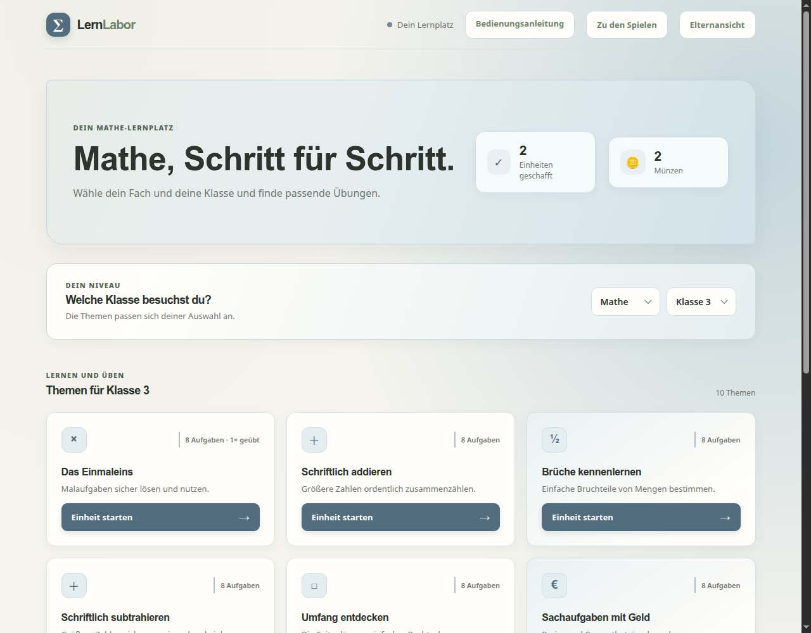
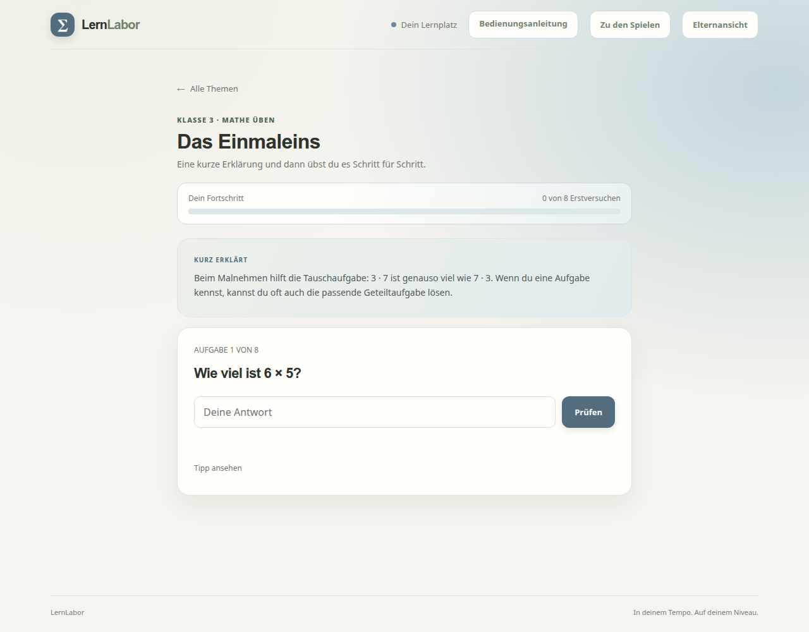
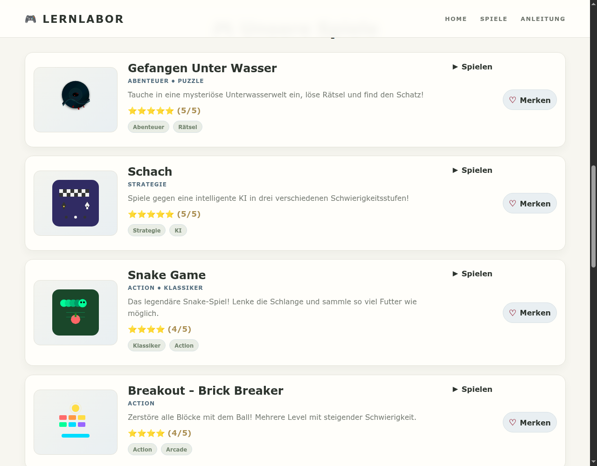
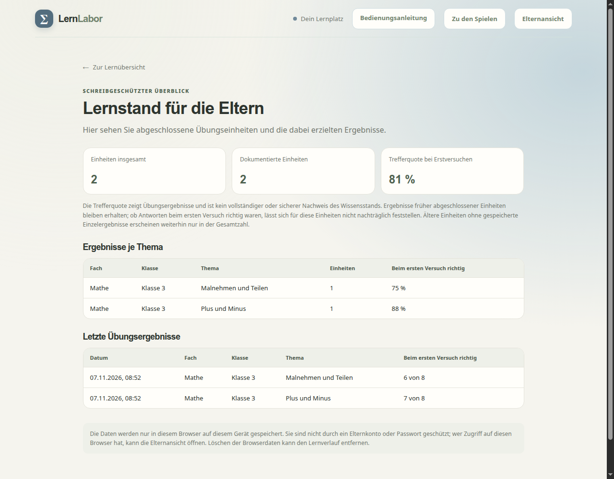

01 · LOS GEHT'S
LernLabor starten
Öffne LernLabor im Browser. Eine Installation oder ein Benutzerkonto ist nicht erforderlich. Auf der Startseite kannst du direkt zum Lernbereich wechseln oder – sobald du Münzen hast – ein Spiel auswählen.
Beginne mit Jetzt lernen. Jede abgeschlossene Lerneinheit bringt dir eine Münze für den GameHub.
02 · LERNEN
Fach, Klasse und Thema auswählen
- Lern-App öffnen: Klicke auf der Startseite auf Jetzt lernen.
- Fach wählen: Im Auswahlfeld kannst du zwischen Mathe und Deutsch wechseln.
- Klasse wählen: Stelle deine Klassenstufe von 1 bis 5 ein. Die Themenübersicht passt sich an deine Auswahl an.
- Thema aussuchen: Jede Themenkarte zeigt den Titel, eine kurze Beschreibung und die Anzahl der Aufgaben. Klicke auf eine Karte mit der Aufschrift Einheit starten.
Deine Fach- und Klassenauswahl bleibt in diesem Browser gespeichert. Du kannst sie jederzeit über die Auswahlfelder ändern. Ein Thema kann auch mehrmals geübt werden.


Eine Übungseinheit bearbeiten
Jede Einheit enthält acht Aufgaben. Auf der Aufgabenseite findest du den Lernfortschritt, eine kurze Erklärung zum Thema, die aktuelle Frage und – falls verfügbar – einen Tipp.


- Lies zuerst den Abschnitt Kurz erklärt und danach die Aufgabe.
- Bei Auswahlfragen klickst du die passende Antwort an. Bei Eingabefragen tippst du deine Antwort ins Feld und klickst auf Prüfen.
- Bei einer falschen Antwort bekommst du eine Rückmeldung. Du kannst den Tipp aufklappen und es erneut versuchen.
- Ist die Aufgabe gelöst, klicke auf Nächste Aufgabe. Die Fortschrittsanzeige zeigt, wie viele Aufgaben du schon beantwortet hast.
- Nach der achten Aufgabe wird die Einheit abgeschlossen. Die Zusammenfassung zeigt, wie viele Aufgaben beim ersten Versuch richtig waren. Mit Zur Themenübersicht kehrst du zu den Themen zurück.
Für die Trefferquote zählt der erste Versuch pro Aufgabe. Du darfst eine falsch beantwortete Aufgabe trotzdem weiter üben und richtig lösen; das ändert die Erstversuchs-Trefferquote nicht.
Welche Antworten kann ich eingeben?
Bei Mathe-Aufgaben kannst du je nach Frage Zahlen und Brüche eingeben. Ein Komma als Dezimalzeichen wird akzeptiert; Brüche kannst du zum Beispiel als 3/4 schreiben. Bei Deutsch-Aufgaben gibst du das gesuchte Wort oder die gesuchte Antwort ein. Manche Aufgaben bieten Antwortmöglichkeiten zum Anklicken statt eines Eingabefelds.
03 · FREISCHALTEN
Münzen und Spielezugang
Für jede vollständig abgeschlossene Lerneinheit erhältst du eine Münze. Die aktuelle Anzahl siehst du oben im Lernbereich neben dem Münzsymbol. Eine begonnene, aber nicht abgeschlossene Einheit gibt noch keine Münze.
Eine Münze ermöglicht den Start eines Spiels. Sobald du ein Spiel startest, wird die Münze verwendet. Beendest du die Spielrunde, wirst du zurück zur Spiele-Plattform geleitet. Ist keine Münze mehr übrig, ist der GameHub gesperrt: Schließe eine weitere Lerneinheit ab, um erneut spielen zu können.
04 · GAMEHUB
Spiele finden und spielen
Du erreichst den GameHub über Zu den Spielen in der Lern-App oder über den Bereich Spiele auf der Startseite. Wenn du noch keine Münze hast, zeigt die Plattform einen Hinweis und einen Link zurück zur Lern-App.


Suchen und filtern
- Suche: Gib einen Namen, ein Genre oder ein Stichwort ein. Die Karten werden während des Tippens gefiltert.
- Genre: Wähle Alle Spiele, Action, Puzzle, Strategie oder Abenteuer.
- Kombinieren: Suche, Genre-Auswahl und Favoritenfilter wirken zusammen. Du kannst also zum Beispiel nur deine Favoriten aus einem Genre anzeigen.
- Keine Treffer? Entferne den Suchtext, wähle Alle Spiele oder schalte Nur Favoriten aus.
Spiele im Überblick
Im GameHub findest du derzeit diese Spiele. Öffne eine Karte mit Spielen, um die Runde zu starten.
Gefangen Unter Wasser
Abenteuer: Erkunde eine mysteriöse Unterwasserwelt, löse Rätsel und suche den Schatz.
Schach
Strategie: Spiele Schach gegen eine KI mit drei Schwierigkeitsstufen.
Snake Game
Action: Lenke die Schlange, sammle Futter und versuche, einen neuen Rekord zu erreichen.
Breakout – Brick Breaker
Action: Zerstöre die Blöcke mit dem Ball und spiele dich durch mehrere Level.
2048
Puzzle: Kombiniere Zahlen, um den Spielstein 2048 zu erreichen.
Memory
Puzzle: Decke Karten auf, finde alle passenden Paare und verbessere deinen Punkte-Rekord.
Asteroids
Action: Weiche im Weltraum den Gefahren aus, schieße auf Asteroiden und überstehe die Wellen.
Neon Runner
Action: Springe durch eine neonfarbene Stadt, sammle Kristalle und bleibe möglichst lange im Spiel.
Sky Stack
Action: Staple bewegliche Blöcke möglichst genau und versuche, deinen Highscore zu übertreffen.
Tic-Tac-Toe & Vier Gewinnt
Strategie: Spiele zwei Klassiker – gegen eine andere Person oder gegen die KI.
Tower Defense
Strategie und Action: Platziere Türme geschickt, um Gegnerwellen aufzuhalten.
Favoriten verwenden
Klicke an einer Spielkarte auf Merken, um das Spiel zu deinen Favoriten hinzuzufügen. Der Knopf wechselt dann zu Gemerkt. Ein erneuter Klick entfernt es wieder. Mit Nur Favoriten kannst du die Spielliste auf deine gemerkten Spiele beschränken. Favoriten kosten keine Münzen.
05 · ÜBERSICHT
Spielfortschritt auf der Startseite
Der Bereich Dein Fortschritt fasst deine bisherigen Spielaktivitäten zusammen:
- Persönliche Rekorde: Zeigt gespeicherte Bestwerte einzelner Spiele, sofern ein Spiel einen Rekord führt.
- Erfolge: Die vier Ziele werden mit ihrem Fortschritt angezeigt:
- Erster Start: ein Spiel starten.
- Stammspieler: insgesamt zehn Spiele starten.
- Spiele-Sammler: fünf verschiedene Spiele ausprobieren.
- Genre-Entdecker: Spiele aus allen vier Genres spielen.
- Zuletzt gespielt: Enthält die zuletzt gestarteten Spiele. Wähle einen Eintrag, um das Spiel erneut zu öffnen.
Wenn noch keine Rekorde oder gespielten Spiele vorhanden sind, zeigt der Bereich einen entsprechenden Hinweis. Für einen Spielstart wird eine Münze benötigt.
06 · LERNSTAND
Elternansicht öffnen und verstehen
Über Elternansicht oben in der Lern-App öffnest du den Lernstandsbericht. Er ist eine Übersicht über abgeschlossene Einheiten, keine Prüfung und keine vollständige Bewertung des Wissensstands.


- Einheiten insgesamt: Anzahl der abgeschlossenen Lerneinheiten.
- Dokumentierte Einheiten: Anzahl der Einheiten, zu denen detaillierte Ergebnisse gespeichert sind.
- Trefferquote bei Erstversuchen: Anteil der Aufgaben, die beim ersten Versuch richtig beantwortet wurden.
- Ergebnisse je Thema: Zeigt Fach, Klasse, Thema, Zahl der Einheiten und den Anteil richtiger Erstversuche.
- Letzte Übungsergebnisse: Zeigt die zuletzt abgeschlossenen Einheiten mit Datum und Ergebnis. Die Liste enthält höchstens 20 Einträge.
Ältere Einheiten ohne gespeicherte Einzelergebnisse können weiterhin in der Gesamtzahl erscheinen, aber nicht in den detaillierten Tabellen. Über Zur Lernübersicht kehrst du zur Themenauswahl zurück.
07 · DEINE DATEN
Speicherung und Datenschutz
LernLabor speichert Lernfortschritt, Münzen, Favoriten und Spielinformationen im lokalen Speicher des verwendeten Browsers. Dafür musst du kein Konto anlegen. Die Daten bleiben auf diesem Gerät und werden nicht automatisch zwischen Geräten oder Browsern übertragen.
Die Elternansicht ist nicht durch ein Passwort geschützt. Personen mit Zugriff auf denselben Browser können sie öffnen. Das Löschen von Website- oder Browserdaten kann deinen gespeicherten Fortschritt und deine Favoriten entfernen.
08 · HILFE
Häufige Fragen
Warum kann ich kein Spiel starten?
Für einen Spielstart brauchst du eine Münze. Schließe in der Lern-App eine Einheit mit allen acht Aufgaben ab. Danach wird die Münze deinem Stand hinzugefügt.
Ich habe eine Aufgabe falsch beantwortet. Muss ich die Einheit neu starten?
Nein. Lies die Rückmeldung, nutze bei Bedarf den Tipp und versuche es erneut. Wenn die Aufgabe richtig gelöst ist, kannst du mit der nächsten Aufgabe weitermachen. Für die Trefferquote zählt nur der erste Versuch.
Warum sehe ich keine Spiele, wenn ich nach Favoriten filtere?
Vielleicht hast du noch keine Favoriten gespeichert. Klicke bei einem Spiel auf Merken oder schalte Nur Favoriten wieder aus.
Kann ich meinen Fortschritt auf ein anderes Gerät mitnehmen?
Der Fortschritt wird lokal im Browser gespeichert und nicht synchronisiert. Er steht daher nicht automatisch auf anderen Geräten zur Verfügung.
Wie komme ich aus einem Spiel zurück?
Beende die Runde über die entsprechende Funktion im Spiel. Danach leitet LernLabor dich zurück zum GameHub.
Bereit?
Wähle ein Fach, starte mit einem Thema und verdiene dir deine erste Spielmünze.
Zur Lern-App